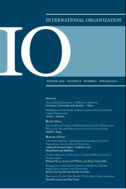
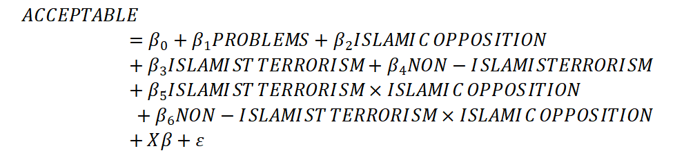
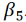
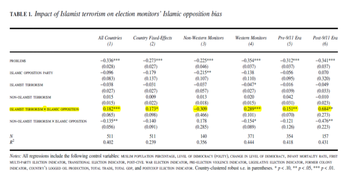
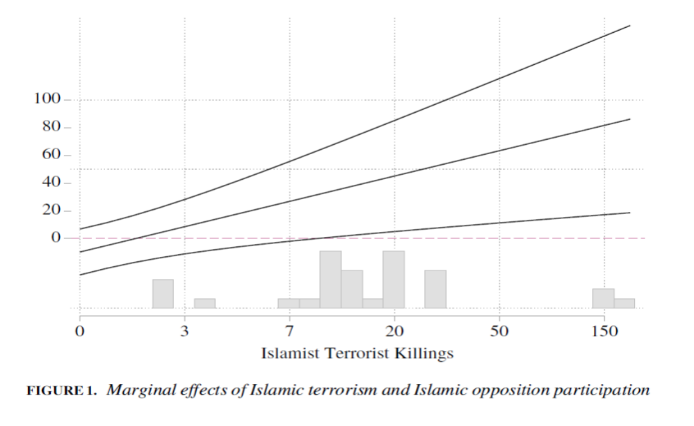

收录于合集

作品简介
【作者】 Kerim Can Kavakli，意大利博科尼大学政治科学助理教授；Patrick M. Kuhn，英国杜伦大学比较政治学副教授。
【编译】 贺凡熙（国政学人编译员，南开大学周恩来政府管理学院国际关系系）
【校对】 蔡 宇
【审核】 董骁天
【排版】 高 鹏
【来源】 Kavakli, K., & Kuhn, P. (2020).Dangerous Contenders: Election Monitors, Islamic Opposition Parties, and Terrorism. International Organization,74(1), 145-164. doi:10.1017/S002081831900033X.

期刊简介

International Organization（《国际组织》），简称“IO”，是一份经过同行评议的季刊，涵盖国际事务的领域包括：外交政策、国际关系、国际与比较政治经济学、安全政策、环境争端与解决、欧洲一体化、联盟模式与战争、谈判与冲突解决、经济发展与调整、国际资本流动等。它成立于1947年，由剑桥大学出版社代表国际组织基金会出版，主编是乔治城大学的Erik Voeten。根据Journal Citation Reports显示，2018年其影响因子为4.508，在91个国际关系类期刊中排名第1，在176个政治科学类期刊中排名第1。
危险的竞争者：选举监督者、伊斯兰反对党和恐怖主义 Dangerous Contenders-Election Monitors, Islamic Opposition Parties, and Terrorism
Kerim Can Kavakli
Patrick M. Kuhn
内容提要
国际观察者如何决定是批判还是容忍一个国家的选举舞弊行为？本文认为，这一决定取决于选举舞弊受害者的身份，如果欺诈行为的对象被监督组织的赞助者认为十分危险，监督组织会对这些欺诈行为视而不见。本文假设在后冷战时代，选举监督者（包括政府间和非政府组织）对针对伊斯兰反对党欺诈舞弊行为更为宽容，尤其是在伊斯兰教运动被视为政治稳定的威胁时。通过定量分析，作者发现，外部监督者更有可能容忍有伊斯兰反对党和伊斯兰恐怖主义运动国家的选举舞弊行为。此外，相较非西方监督组织，西方国家的监督组织往往做出上述决定，且这一趋势在“9·11”袭击事件后愈演愈烈。简而言之，外部观察者对一国选举的考量不仅取决于他们希望看到谁掌权，还取决于他们希望阻止谁掌权。
文章导读
促进民主是西方国家冷战后外交政策的关键要素，但西方并不总是希望将威权政府推向民主化，那么来自西方的外部行为体，是如何决定促进民主还是容忍一国的威权主义的呢？学者指出，西方国家在促进民主和维护国家利益两个目标之间进行权衡（trade- off）。此前研究表明，西方国家往往会忽视那些在经济和政治上对其十分重要的国家发生的镇压行为。同时，初步迈向民主化的国家当权者，以及那些同西方维持良好关系的当权者往往会面临更少的自由化压力。
作者将反对党引入民主推广的研究中，认为外部行为者对选举结果的考量不是基于对现任政权的绝对偏见，而是基于对现任政权及其挑战者的相对偏见。如果可能取代当权者的挑战者对民主和国际合作抱有怀疑态度，外部行为者更有可能对当权者的操纵选举行为视而不见。 冷战后西方将伊斯兰政党视为威胁，伊斯兰恐怖袭击加剧了西方的偏见，因此，当面临伊斯兰反对党和持续的伊斯兰恐怖运动时，国际观察者更愿意容忍操纵选举的行为。
本文的结论是：伊斯兰恐怖主义令西方观察者怀疑伊斯兰政党，这使得西方观察者忽视选举中针对伊斯兰反对党的舞弊行为。在9·11事件发生后，随着反恐战争和遏制伊斯兰极端主义逐渐成为西方世界的首要任务，这种偏见愈发强烈。
01
一、选举监督者的偏见，伊斯兰反对党和伊斯兰恐怖主义
作者认为，冷战后，选举监督者对于伊斯兰政党的怀疑令其更有可能在挑战者是伊斯兰反对党的情况下，选择支持一场存在舞弊欺诈行为的选举，而人们对于伊斯兰政党的威胁感知因国内和国际伊斯兰恐怖主义而强化。
（一）稳定与民主推广之间的权衡
本文结论的基本前提是，选举质量不是国际监督者决定支持或反对选举结果的唯一影响因素，选举监督者在冷战后时期面临民主推广和国际稳定之间的权衡。 监督者对稳定的偏好主要取决于其对当权者的偏见，监督者同当权者的关系越好，监督者及其主要捐助者(donor)就更有可能支持一场舞弊选举。外部行为者对挑战者的看法也很重要，如果挑战者中有意识形态不友好又激进的政党，且这样的政党很有可能获取权力，那对外部行为体而言，维持稳定的重要性就上升了。监督者支持威权主义政权并不是因为当权者给予他们实际的好处，而是因为在其背后的主要捐助者看来，削弱当权者权力可能会带来一个对自身更不利的行为者。
（二）伊斯兰政党的政治目标和信用问题
后冷战时代，许多学者将伊斯兰反对政党视作政治稳定的威胁，因为这些群体分布广泛且拥护具有破坏性的政治目标。 为什么伊斯兰运动相较其他团体更容易普及呢？首先，伊斯兰政党极其强调诚实和公平，这对生活在贫穷且腐败多发的社会的民众而言具有强大的吸引力；其次，伊斯兰政党常常同那些提供区域公共物品的草根组织有联系，这使得他们颇有美誉；第三，当其他形式的非国家团体被镇压时，伊斯兰政党往往被允许存在。
除了普及性以外，伊斯兰政党的国内和外交政策目标引发了人们的担忧。 在对外政策上，大部分伊斯兰政党都在他们的党纲中提及圣战（jihad），并反对同西方尤其是美国有密切联系的以色列，而亨廷顿“文明冲突论”的观点加剧了人们因伊斯兰政党党纲产生的怀疑。如果伊斯兰政党获取权力，他们可能会采取对西方国家及其盟国敌对性的政策。在国内政治上，伊斯兰政党可能假装民主并参与选举竞争，一旦他们夺取权力，就会采取具有压迫性的手段。
伊斯兰政党并不总被视为是民主的极大威胁，但是，对于伊斯兰运动的不信任是很难被消除的。而这种不信任是否会导致选举监督者评估中的偏见则同其他环境因素相关，其中最重要的就是伊斯兰恐怖主义。
（三）伊斯兰恐怖主义与危险感知的提升
作者假设，伊斯兰政党的信用问题和外部行为者对他们的偏见在那些有伊斯兰恐怖组织运作的国家更为严重。首先，恐怖主义败坏了温和派的名声，这是暴力极端分子的主要目标之一，当外部行为体从一开始就对温和派缺乏信任时，恐怖主义者更有可能达成目的。其次，当权者常常利用伊斯兰恐怖袭击，把反恐当作镇压和削弱强有力挑战者的借口，外部行为者可能会接受当权者的说法，因为伊斯兰反对党常常同伊斯兰暴力组织联系在一起，而外部行为者而外部行为体缺乏在这些国家实施独立调查的情报能力和授权，并不了解该国具体情况。
当伊斯兰反对党和伊斯兰恐怖主义合并到一起时，会被认为比其他选举挑战者对稳定的威胁更大，因而西方会助推监督者对选举中打击伊斯兰政党的舞弊行为保持容忍的态度。 本文的主要假设是：如果选举监督组织认为稳定较民主化更为重要，那他们会对针对伊斯兰反对党和伊斯兰恐怖主义的选举舞弊行为更为容忍，且西方世界对稳定的重视可能多于民主化，西方监督者相较非西方监督者可能对选举中出现的针对伊斯兰反对党的舞弊行为更为宽容。 同样可能提高人们的威胁感知的还有跨国的伊斯兰恐怖主义，最主要的案例就是9·11恐怖袭击。9·11后，同极端主义者有关联的伊斯兰政党并不仅对该国稳定构成威胁，也是全球恐怖主义的潜在支持者。 因此，在后9·11时代，作者认为稳定的相对重要性在增加，因而选举监督者将对选举中出现的针对伊斯兰反对党的舞弊行为更为容忍，当这一国家正在进行伊斯兰恐怖运动时尤为如此。
02
研究设计
（一）数据
本研究的分析单位是1990到2004年间的选举活动，这些选举活动自1991年1月到2004年12月接受监督组织的评判。冷战后，稳定和民主之间的权衡不再被冷战时西方世界的地缘政治考量所掩盖，选举监督成为国际性规范。监督组织包括政府间组织和非政府组织，他们根据选举前、选举期间和选举后国内观察员收集的信息，在选举后三个月内发布报告。作者通过其成员(政府间组织)或其总部所在地(非政府组织)来区分西方和非西方组织。
本文的结果衡量指标（因变量）是一个组织是否接受选举结果，这里设置了二分变量“可接受”（ACCEPTABLE）来反映一个组织的考量评估。 当监督组织报告明确表示接受选举结果时，这一变量取“1”，报告对于选举质量模棱两可或确定其不可接受时，这一变量取“0”。
在自变量上，为衡量选举违规行为，本文设置了 “问题”（PROBLEMS）指标，范围在0（“没有问题”）到3（“很大问题”）之间。 这一变量包括该国的法律框架、选举前期的问题和选举日发生的问题。 基于监督组织对选举出现问题程度的鉴别，这一变量让我们能够评估伊斯兰反对党、伊斯兰恐怖组织及其互动对监督组织是否接受选举结果的影响。如果监督者完全根据选举问题的严重性来决定赞成或反对选举，那么所有其他变量的系数估计值应该接近于0。 根据Kurzman和Naqvi所列出的伊斯兰在野党清单，本研究设置了变量“伊斯兰反对党”（ISLAMIC OPPOSITION PARTY）。 这一二分变量在一国存在伊斯兰反对政党时为“1”，否则取“0”。为测量恐怖主义活动，根据兰德公司的全球恐怖主义事件数据库（RAND Database of Worldwide Terrorism Incidents），本文在数据库中区分了伊斯兰组织和非伊斯兰组织，并计算伊斯兰组织和非伊斯兰组织前一年在该国为了选举犯下的杀戮数量。根据这些数字， 设置“伊斯兰恐怖主义活动”（ISLAMIST TERRORISM）和“非伊斯兰恐怖主义活动”（NON-ISLAMIST TERRORISM）两个变量，作为衡量恐怖主义活动的主要标准。由于一国的政治不稳定不全是“伊斯兰恐怖主义活动”引起的，作者也考虑了“非伊斯兰恐怖主义活动”（NON- ISLAMIST TERRORISM）和“伊斯兰反对政党”的结合效应。
在控制变量上，本研究加入“穆斯林人口”（MUSLIM POPULATION）百分比这一变量，因为这样的文化因素可能与选举舞弊水平的提高以及伊斯兰挑战者的兴盛关；本文使用Polity IV数据集中的“政体”（POLITY2）变量来控制一个国家的总体民主水平，以剥离选举舞弊对监督者是否接受选举结果的影响，作者还加入并控制“第一次多党”（FIRST MULTIPARTY）、“过渡时期”（TRANSITIONAL）、“冲突后”（POSTCONFLICT）和“政变后”（POSTCOUP）选举这些指标，并对去年“民主的变化”（CHANGE IN DEMOCRACY）进行控制；作者用“婴儿死亡率”（INFANT MORTALITY RATE）作为一个国家福利的衡量标准，这一指标可能同一国选举舞弊和伊斯兰政党的存在有关；作者还控制“选举前的暴力行为”（PRE-ELECTION VIOLENCE），因为这可能同恐怖活动和选举不当行为有关；“立法选举”（LEGISLATIVE ELECTION）变量在不同类型的选举中有所区别，因为这些选举可能在反对派团体的参与和选举舞弊方面有所不同。最后，作者还加入了同监督组织捐助者利益相关的四项衡量指标，首先是一国“石油生产”（OIL PRODUCTION）的记录价值，二是一国已记录的“贸易总值”（TOTAL TRADE）和“国内生产总值”（TOTAL GDP），四是“前殖民地”（FORMER COLONY），当该国家是法国和英国的前殖民地时，编码为1，否则为0。
总体而言，样本包括来自93个国家和21个组织14年的选举活动，在511个有监督组织的选举中，有38个存在伊斯兰反对党。本文建立线性回归分析模型，等式如下：

（作者假设系数
与结果正向相关且具有显著性）
（二）结果
通过控制6个与国家相关的变量，作者验证了伊斯兰恐怖主义与伊斯兰反对党的相互作用会对监督者的判断产生正向的影响。在存在伊斯兰反对党的选举中，选举监督者更有可能在伊斯兰恐怖主义不断发展时支持选举结果。本模型考虑了深层次原因，结果显示监督者会对那些存在伊斯兰恐怖主义组织国家的伊斯兰运动有更大的偏见。表1中模型1、2稳定的回归系数显示结果很稳定，且估计这一效应出现在伊斯兰恐怖主义和伊斯兰反对党互动的时候。
图1显示了伊斯兰恐怖主义和伊斯兰反对党参与对监督组织支持选举程度的边际效应，结果显示如果不存在伊斯兰恐怖主义，伊斯兰反对党的存在就无关紧要，只有当两者结合时，才有大的不同。表1中模型3、4的结果表示西方组织特别关注伊斯兰运动对稳定构成的威胁，进而影响他们对选举结果的评估，模型5、6显示，这种偏见在9·11事件后变得更加强烈。值得注意的是，在模型6中，另一同恐怖主义有关的系数显示，外部观察者并不会因为当权者在打击恐怖主义而对选举中的舞弊现象更为宽容，而仅在伊斯兰反对党和伊斯兰恐怖主义协同出现的时候，会支持选举结果。
 表1 （标题）伊斯兰恐怖主义对选举监督者关于伊斯兰反对党偏见的影响 图1（标题）伊斯兰恐怖主义与伊斯兰反对党参与的边际效应
03
稳健性检验
在这一部分，作者通过改变数据库、替换原有变量以及使用逻辑回归分析法等方式对上文结论进行了稳健性检验，得出的结果支持作者观点。作者还评估了当权者采取不同程度的舞弊行为的结果，结果显示被外部行为者看好的当权者更有可能舞弊，以利用外部行为者的偏见。
因为上文结论可能受到选举监督者修改关于舞弊选举的报告以证实其结论的影响，所以作者通过民主国家和威权国家的国家大选（NELDA，national Elections in Democracies and Autocracies）数据库重新评估了上文建立的模型，主要关注有关选举公正性的两个指标：反对党领袖是否被排除在运营（running）之外，以及政府是否扰乱了反对党，结果显示本文的结果可以在用以上指标替代选举的“问题”这一变量的情况下成立，说明对潜在违规行为的有策略的报告并没有歪曲本文结论。
本文通过统计选举前一年的死亡人数来衡量恐怖主义活动，但一年的时间可能比外部观察者观察一个国家激进伊斯兰威胁的时间短，因而作者对过去5年的杀戮数量进行了统计，还将袭击数量作为衡量恐怖主义活动的标准，结果是整个样本的估计仍然相似，但是子样本之间的差异不再具有统计意义，因而可以推断外部行为者更关注恐怖活动的致命性而不是发生的频率。
考虑到不可观察因素可能导致错误理解关键变量之间的关系，作者使用学者提出的程序和线性回归，证明伊斯兰恐怖主义伊斯兰反对党的预估效应不太可能完全归因于遗漏变量偏误。
作者进行了额外的稳健性分析，证明本文结果不受特定选举或国家的影响。为了了解监督组织如何选择观察哪些选举，为了测试参加有和没有伊斯兰政党的选举的监督组织间差异是否影响研究结果，作者加入监测固定效应以消除“观察者之间”（between observer）的差异，结果显示本文结论纯粹基于“观察者自身”（within- observer）的变化。本文的结果是否源于监督者的策略性决策？实际上，伊斯兰恐怖主义和伊斯兰反对党的结合效应仍会提高监督者支持选举结果的可能性，并不影响监督组织选择阶段。监督组织可能会采取从众行为，作者对此进行了两项分析，以检查这种从众行为是否影响本文结论，结果显示从众行为对于结论变化的影响比较小。
作者的定量分析基于学者Kelly的研究，虽然Kelly的研究始于1984年，而本文理论适用于冷战后时期，但是研究证明结果是相似的。通过基于另一数据库的测量，有关“伊斯兰反对党”的结论是相似的，所以不存在由于数据来源问题导致结果失效。作者还检验关键变量之间是否存在线性交互效应，即假设伊斯兰恐怖主义程度越高，伊斯兰反对党的影响越大。作者的结论是，高水平的伊斯兰恐怖主义与低水平和零水平的伊斯兰恐怖主义相比，交互作用的效果更强。
最后，作者检验了政府间组织和非政府间组织对伊斯兰政党选举的评价是否不同，但并没有发现显著差异，非政府组织往往比政府间组织更独立，但仍与捐助国保持密切联系，因此，非政府组织和政府间组织监测员对选举的稳定和民主有着相似的关切。
04
结论
本研究分析了外部观察者支持或拒绝承认选举结果的影响因素。并证明冷战后的选举监督者更有可能在有伊斯兰反对政党参加，且有伊斯兰恐怖活动正在进行时，接受有问题的选举，这种有条件的偏见在西方观察者中表现的尤为明显，尤其是在2001年美国开始反恐战争后变得更为显著。
本文的启示是，当外部行为体在他国选举中选择立场时，其考量不仅是基于同当权者的关系，而是基于对当权者和挑战者的相对偏见。 本文结论具有重要的政策意义，选民往往不愿意相信那些存在偏见的监督者对选举的评估，如果选民认为国际监督者对于伊斯兰反对政党存在偏见，他们就会对这些监督者的信用存疑。 无论对于伊斯兰政党的怀疑是否正确，外部行为体应区分选举监督和打击恐怖主义，避免将二者混为一谈，产生意料之外的结果。
本文对于未来研究的启示：首先，对于那些存在伊斯兰挑战者和正在发生伊斯兰恐怖主义运动的国家，世界银行应该更加迅速且慷慨地给予贷款；其次，本研究提出了一个问题，即非西方力量在干预其他国家的选举时是如何看待不同类型的挑战者的；最后，本文强调了同恐怖主义组织在意识形态上有关联的政党参与选举时，恐怖主义组织可能发挥的重要影响。那么当政党同和他们在意识形态上有关的暴力团体划清界限后，他们会采取怎样的策略以提升国内和国际观众对他们的信任？这是值得探索的问题。
<img src=’/images/2113/12.jpeg’ width=‘100%’
/>本文由国政学人独家编译推荐，文章观点不代表本平台观点，转载请联系授权。

好好学习，天天“在看”